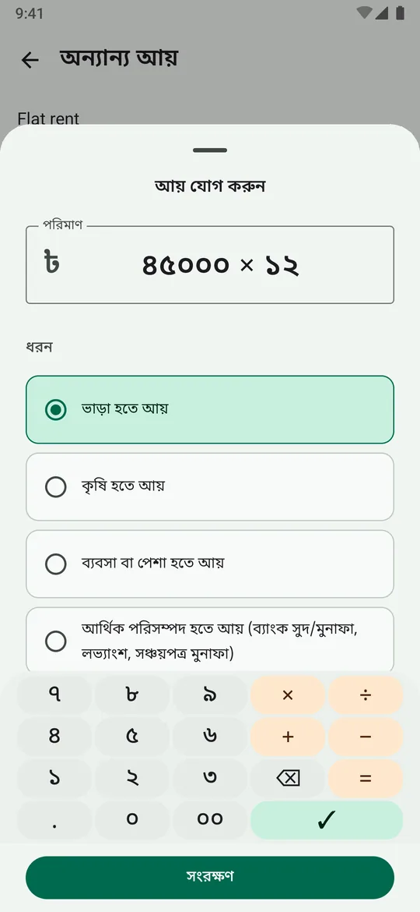
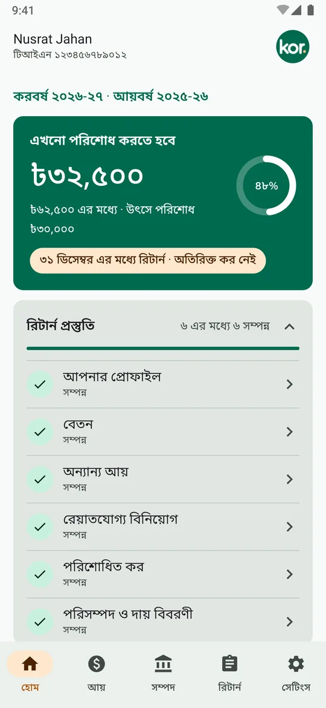
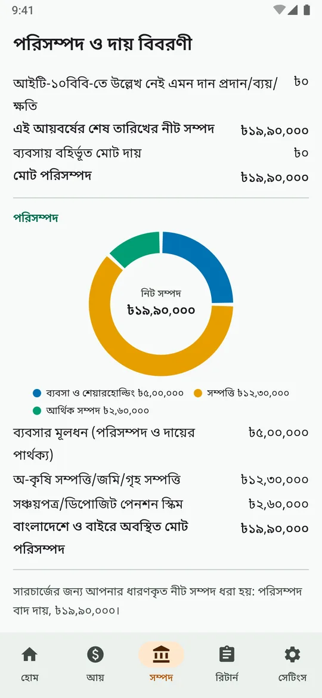
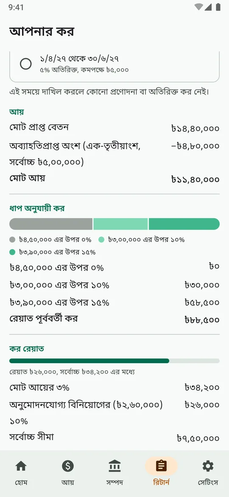
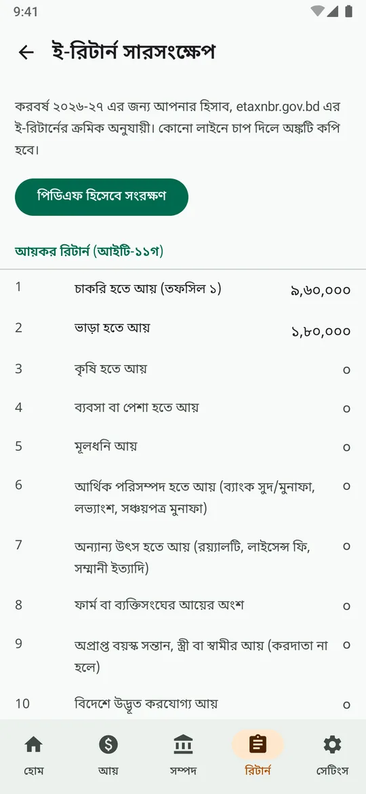

ধাপে ধাপে কর হিসাব
ধাপভিত্তিক কর, বিনিয়োগ রেয়াত, ন্যূনতম কর, নিট সম্পদের উপর সারচার্জ এবং দাখিলের প্রণোদনা বা অতিরিক্ত কর। প্রতিটি লাইন ই-রিটার্নের মতো পূর্ণ টাকায়।
বাংলাদেশের ব্যক্তিগত আয়কর
কর একটি ব্যক্তিগত অ্যান্ড্রয়েড অ্যাপ। বছরের মধ্যেই আয়, বিনিয়োগ ও পরিশোধিত কর লিখে রাখুন। দেখুন কত কর দিতে হবে, ৩০ জুনের আগে রেয়াতের জন্য আর কত বিনিয়োগ করা যায়, আর ই-রিটার্নের জন্য সম্পদ বিবরণী তৈরি রাখুন।
প্রি-আলফা, করবর্ষ ২০২৬-২৭ এর জন্য। এখনো ডাউনলোড নেই: গিটহাব থেকে সোর্স নিয়ে অ্যাপটি বানিয়ে নিতে পারেন।



হোম স্ক্রিনে দেখা যায় আপনার আর কত কর বাকি, উৎসে কর্তনে কতটা মেটানো হয়েছে, আপনার জন্য কোন দাখিলের সময় প্রযোজ্য, সঙ্গে কী কী পূরণ করা বাকি তার চেকলিস্ট।

ধাপভিত্তিক কর, বিনিয়োগ রেয়াত, ন্যূনতম কর, নিট সম্পদের উপর সারচার্জ এবং দাখিলের প্রণোদনা বা অতিরিক্ত কর। প্রতিটি লাইন ই-রিটার্নের মতো পূর্ণ টাকায়।
আয়বর্ষ চলাকালে দেখুন ৩০ জুনের মধ্যে আর কত বিনিয়োগ করলে ঠিক কত কর কমে। যেখানে ন্যূনতম কর শুরু হয়, সেখানেই থামে।
ই-রিটার্নের বিন্যাসে আইটি-১০বি ও আইটি-১০বিবি, এনবিআর যেভাবে মিলিয়ে দেখে সেভাবেই। মিললে কর জানায়, না মিললে কত এবং কোন দিকে ফারাক তা বলে।
প্রতিটি অঙ্ক ই-রিটার্নের লাইন নম্বরের নিচে। কোনো লাইনে ট্যাপ করলে অঙ্ক কপি হয়, অথবা পুরো সারাংশ পিডিএফ হিসেবে সংরক্ষণ করুন।
লাখ-কোটির কমাসহ কিপ্যাডে ৪৫,০০০ × ১২-এর মতো যোগ-গুণ লিখুন। অ্যাপ বাংলায় থাকলে অঙ্ক বাংলায় দেখায়।
আগাম দাখিলের প্রণোদনা শেষ হওয়ার আগে, অতিরিক্ত কর শুরু বা বাড়ার আগে এবং বিনিয়োগের জন্য ৩০ জুনের আগে একটি বার্তা। কোনো অঙ্ক দেখানো হয় না।


কাল্পনিক করদাতার কাল্পনিক অঙ্ক দিয়ে অ্যাপ থেকে নেওয়া স্ক্রিনশট।
করের ইন্টারনেট অনুমতি নেই, তাই কোথাও কিছু পাঠাতে পারে না। আপনার হিসাব শুধু ফোনেই থাকে, অ্যান্ড্রয়েড কিস্টোরের চাবিতে সিল করা।
কর এখনো প্রি-আলফা। করবর্ষ ২০২৬-২৭ এর নিয়ম (আয় ১ জুলাই ২০২৫ থেকে ৩০ জুন ২০২৬, রিটার্ন ২০২৬ সালের শেষে) নেওয়া হয়েছে এনবিআরের আয়কর নির্দেশিকা ২০২৬-২০২৭, অর্থ আইন ২০২৬ ও আয়কর আইন ২০২৩ থেকে, আর টেস্টে নির্দেশিকার উদাহরণগুলো মেলানো হয়।